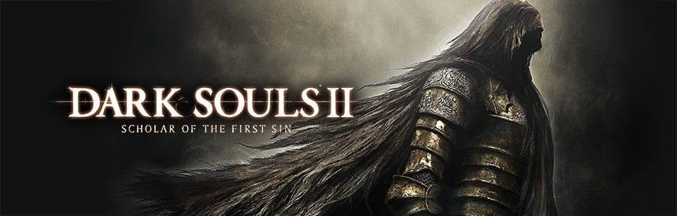
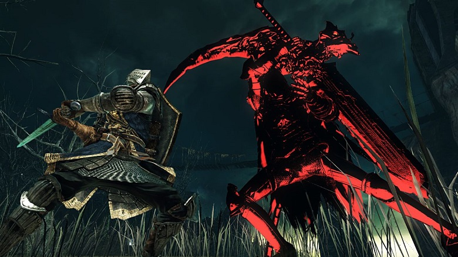
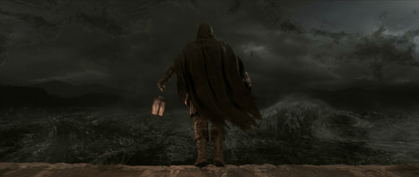

Dark Souls II: Scholar of the First Sin

Publishing Info
- Published by:
- BANDAI NAMCO Games Inc.
- BANDAI NAMCO Games America Inc.
- ak tronic Software & Services GmbH
- Developed by: FromSoftware, Inc.
- Released: April 1st, 2015
Description
Dark Souls II: Scholar of the First Sin is a remastered release of Dark Souls II. Next to the main game with all patches includes the three DLC packs:
- Dark Souls II: Crown of the Sunken King
- Dark Souls II: Crown of the Old Iron King
- Dark Souls II: Crown of the Ivory King
The gameplay has been slightly changed by removing certain safe zones and adding new NPCs and enemies, including the Forlorn.
The placing of enemies have been changed to create a whole new game dynamic, specifically for returning players.
Online and the campaign have had game balance tweaks, improved online matchmaking, better quality graphics and different item descriptions.
The PC (DirectX 11), PS4 and Xbox One version have additional upgrades to graphics, sound, and performance. For those platforms online gameplay has also been changed from 4 to supporting 6 players.
Game Categories
- Genre: Action RPG
- Perspective: Behind View
- Setting: Fantasy
Review Quote
This definitely goes under the heading of "Games That Were Made While a Programmer Was on Drugs," or at least had a good imagination. And maybe they were into horror movies too.
-- https://www.mobygames.com/mobyrank/source/sourceId,540/